ユーザー管理
ユーザー管理について
ユーザー管理画面より、ユーザーの追加・設定変更・削除などの管理を行うことができます。
ユーザー管理画面への遷移
管理画面より「ユーザー管理」をクリックすると、ユーザー管理画面が表示されます。
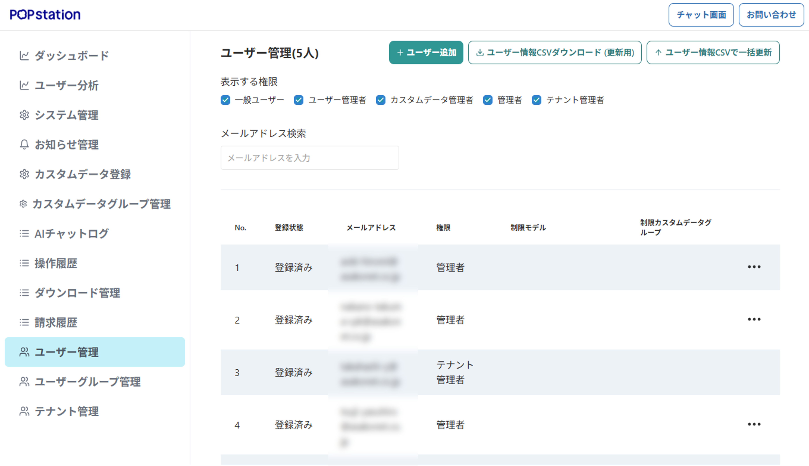
ユーザー権限の絞り込み表示
ユーザー管理画面の上部にあるボタンで、チェックした権限のみ表示することができます。
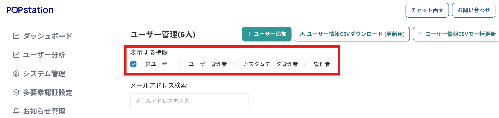
ユーザーの追加
-
ユーザー管理画面の左上に表示されているユーザー追加ボタンをクリックしてください。
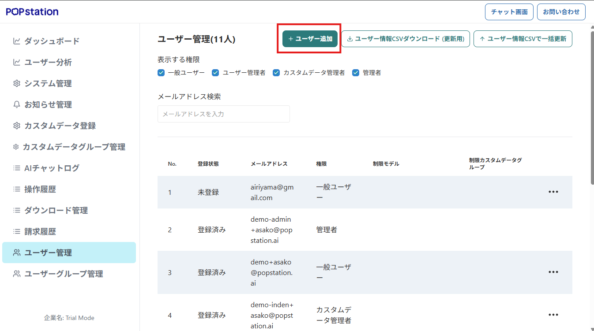
-
ユーザー追加画面が表示されます。
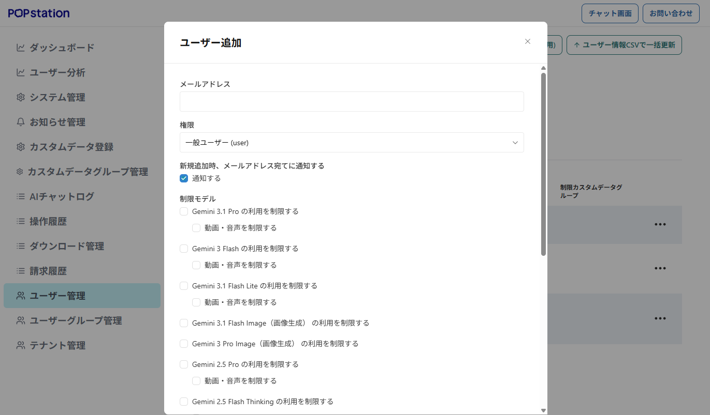
-
追加するユーザーのメールアドレスと権限欄の▽をクリックして対象ユーザーの権限を変更してください。その後、送信ボタンをクリックしてください。
権限の詳細については、「アカウント権限」ページをご確認ください。
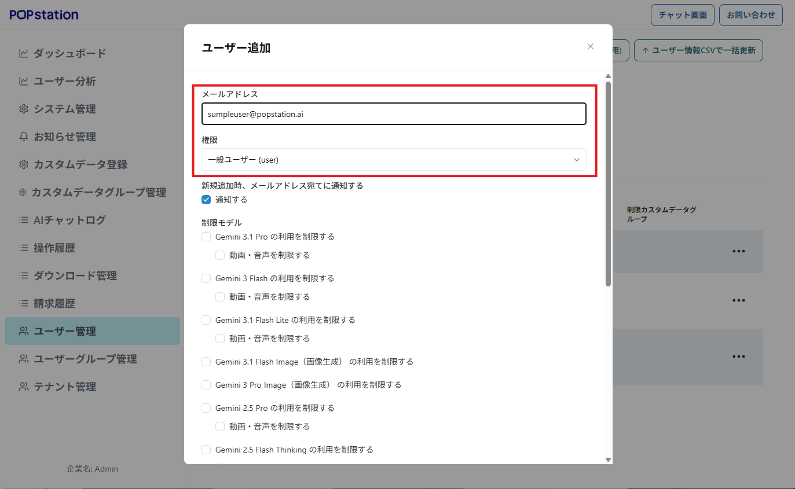
-
ユーザーへ制限するモデルとカスタムデータグループを選択してください。
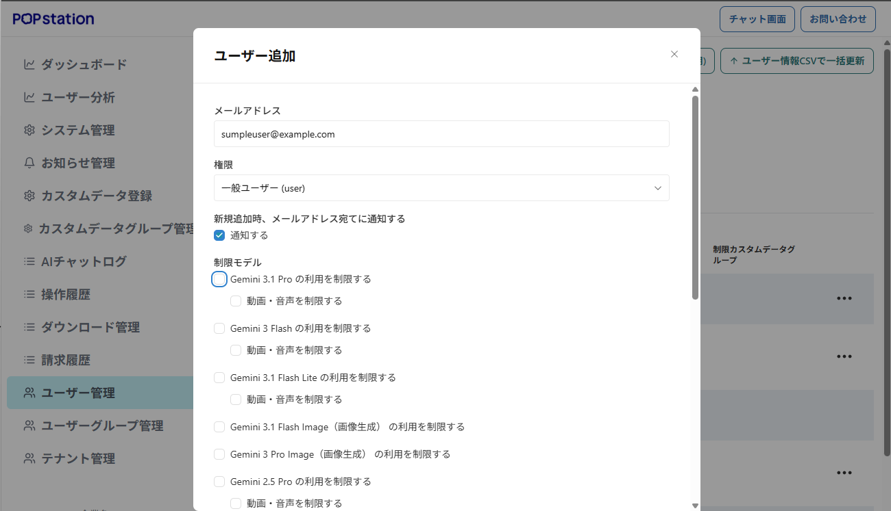
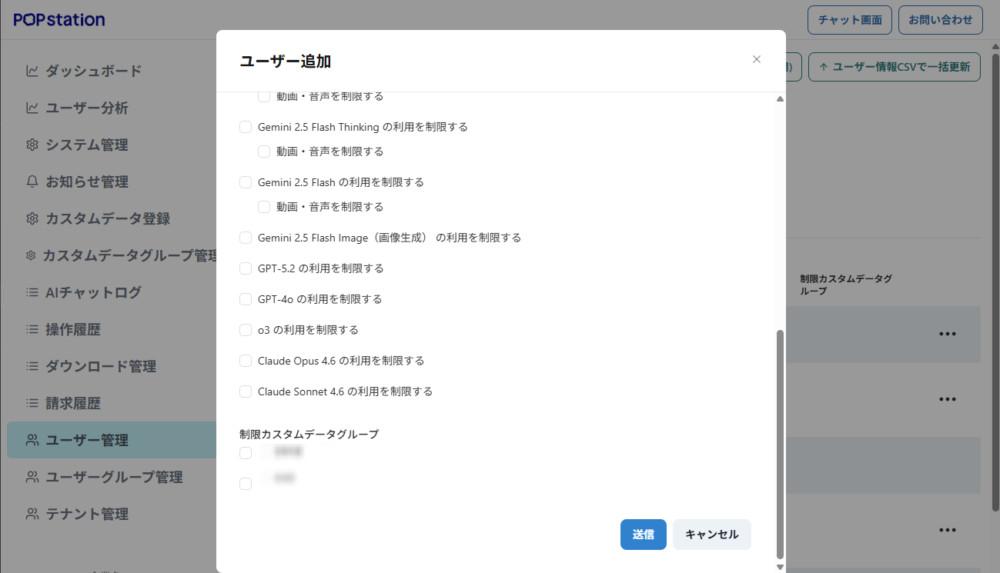
-
入力が終わりましたら、送信ボタンをクリックしてください。
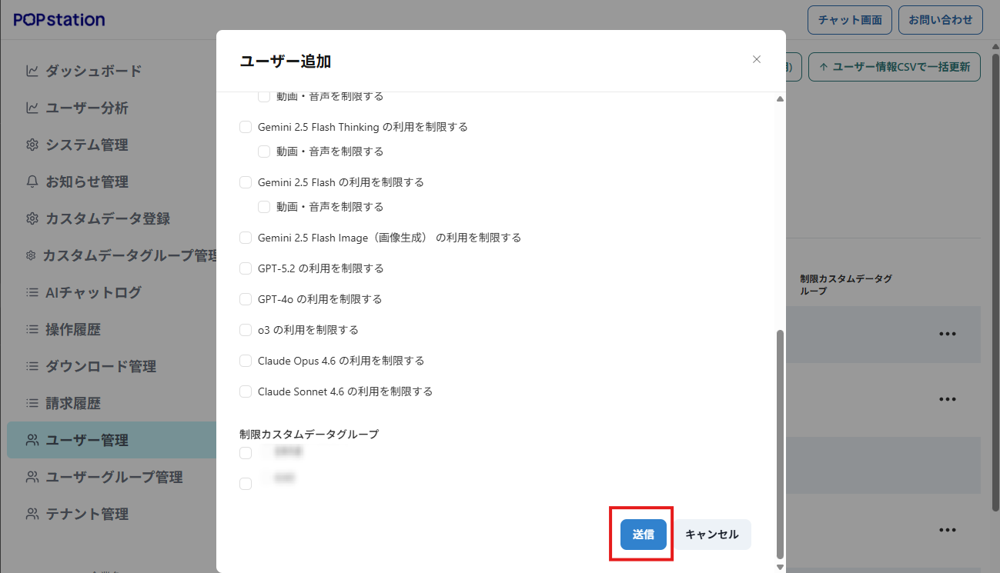
-
新規ユーザーが追加されます。

ユーザーの設定変更
各ユーザーの権限や、制限するモデル/カスタムデータグループを変更することができます。
-
ユーザー管理画面から、設定を変更するユーザ欄右端にある変更ボタンをクリックしてください。
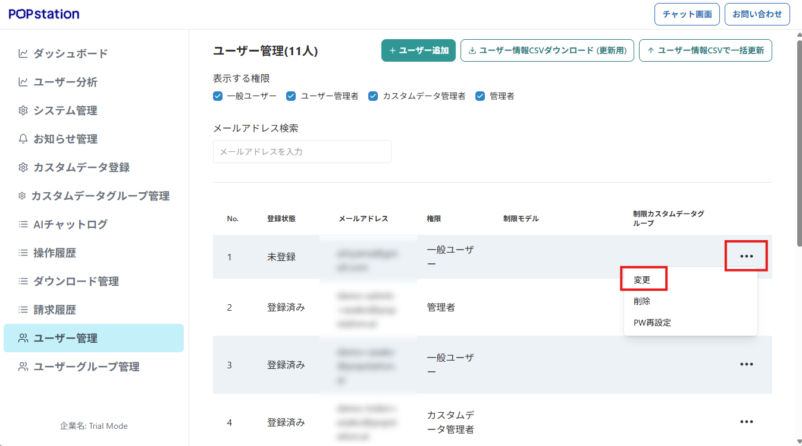
-
ユーザー編集画面が表示されるので、変更する項目にチェックを入れて下さい。
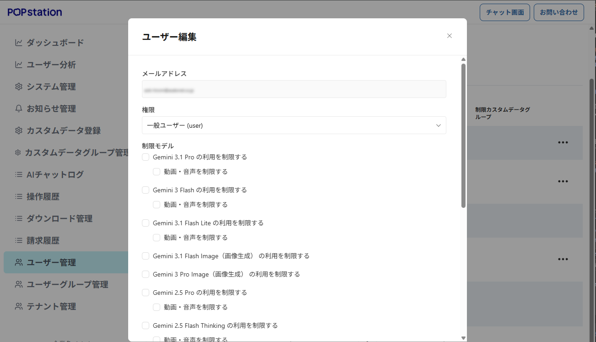
個別ユーザーへの制限設定について
ここで設定する「制限するモデル」「制限するカスタムデータグループ」は、グループで許可されている設定よりも優先されます。
例：ユーザーが所属するグループで「GPT-4o」が許可されていても、個別に「GPT-4o」を制限設定した場合、そのユーザーは「GPT-4o」を利用できません。
-
入力が完了したら、送信ボタンをクリックしてください。
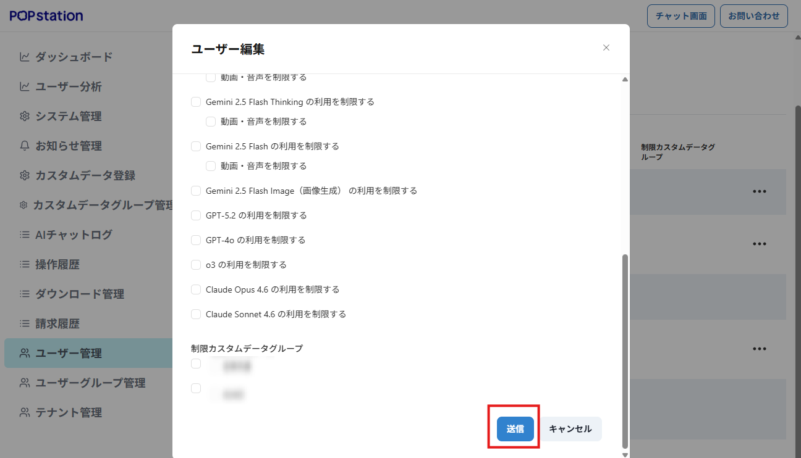
-
ユーザーの設定が変更されます。

ユーザーの削除
-
ユーザー管理画面から、削除するユーザ欄の右端にある削除ボタンをクリックしてください。
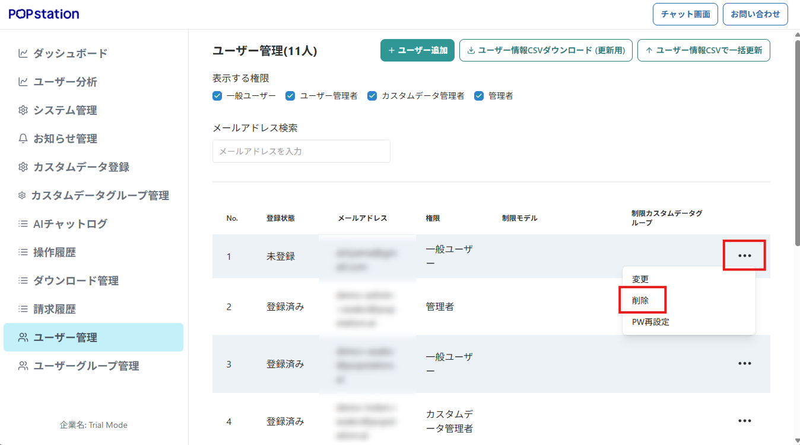
-
ユーザー削除画面が表示されます。
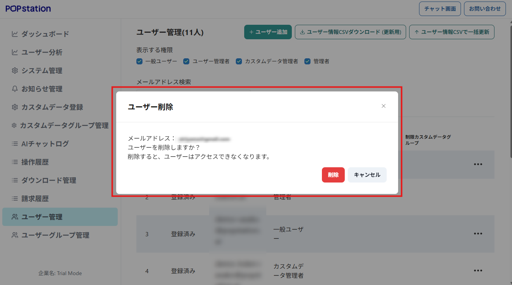
-
削除ボタンをクリックしてください。
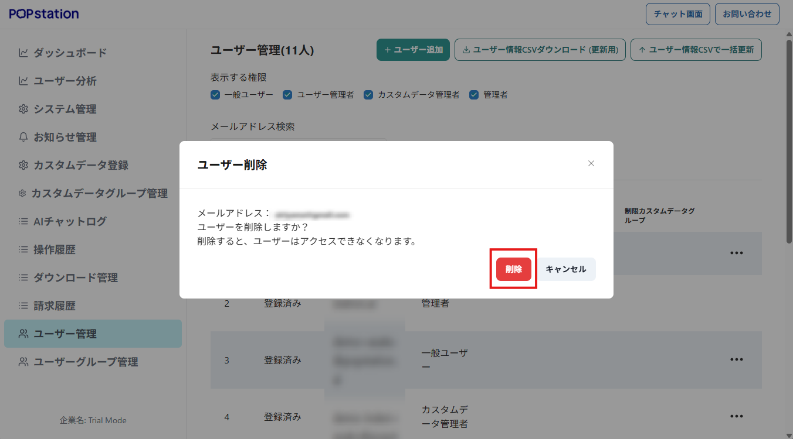
-
ユーザーが削除されます。

ユーザーの一括追加/設定変更/削除
CSVファイルを利用して、ユーザー情報の一括での追加、設定変更、および削除を行うことができます。
-
ユーザー管理画面の「ユーザー情報CSVダウンロード（更新用）」ボタンをクリックし、CSVファイルをダウンロードします。
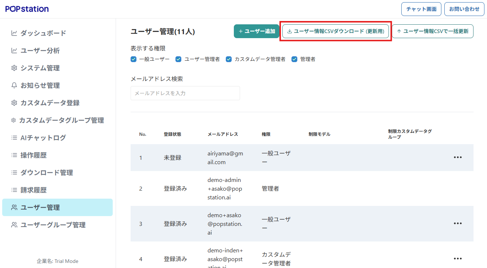
-
ダウンロードしたCSVファイルに、以下の情報を記述します。
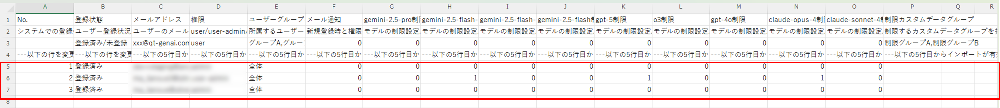
CSVに記載する情報
- No.: システムでの登録番号です。自動で採番されるため、CSVファイル上でこの値を変更してもシステムには反映されません。
- 登録状態: ユーザーの登録状況です。CSVファイル上でこの値を変更してもシステムには反映されません。
- メールアドレス (必須): ユーザーのメールアドレスを記載します。
-
権限 (必須): ユーザーに付与する権限を、以下のいずれかから指定します。
admin: 管理者user-admin: ユーザー管理者custom-data-admin: カスタムデータ管理者user: 一般ユーザー
権限の詳細については、「アカウント権限」ページをご確認ください。
-
ユーザーグループ名: ユーザーが所属するユーザーグループ名を記載します。複数のグループに所属させる場合は、カンマ区切りで指定します。未入力の場合は「全体」グループに所属します。
- ユーザーグループの詳細については、「ユーザーグループ管理」ページをご覧ください。
- 既存のユーザーグループのほか、新しいユーザーグループ名を指定して作成することも可能です。
-
メール通知 (必須): 新規登録時や権限変更時に通知メールを送信するかどうかを設定します。
1で「送る」、0で「送らない」を指定します。 - 各種モデル制限: 各AIモデルの利用を制限するかどうかを設定します。
1で「制限する」、0で「制限しない」を指定します。未入力の場合は「制限しない」設定になります。 - 制限カスタムデータグループ: ユーザーに利用を制限するカスタムデータグループ名を記載します。複数のグループを制限する場合は、カンマ区切りで指定します。未入力の場合は制限なしとなります。
- 新メールアドレス: メールアドレスを変更する場合に、新しいメールアドレスを指定します。入力された場合、確認メールが送信されます。※未入力の場合は変更されません。
操作の種別
- 追加: 新しいユーザーの情報をCSVファイルに記述します。
- 設定変更: 既存ユーザーの情報をCSVファイル内で変更します。メールアドレスでユーザーを特定し、記述された内容で情報が上書きされます。
- 削除: CSVファイルに記載されていない、かつ操作可能なユーザーは削除対象となります。
- 自分自身や上位権限者など操作権限のないユーザーは削除されません（アップロードファイルに記載があっても処理対象外です）。
- 意図しないユーザー削除を防ぐため、アップロード前にはファイルの内容を十分に確認してください。
-
ユーザー管理画面に戻り、画面上部の「ユーザー情報CSVで一括更新」ボタンをクリックします。
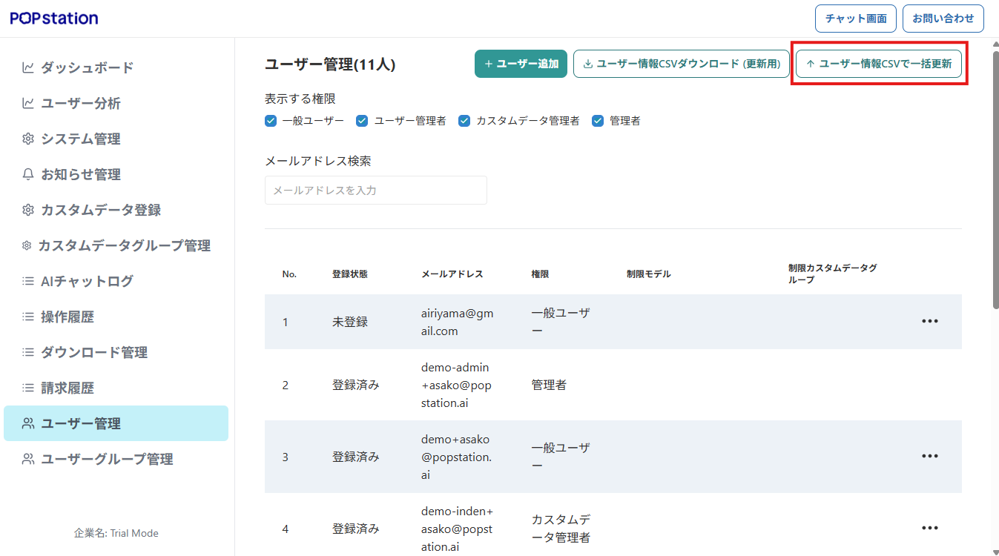
-
ユーザー情報CSVのアップロード画面が表示されます。
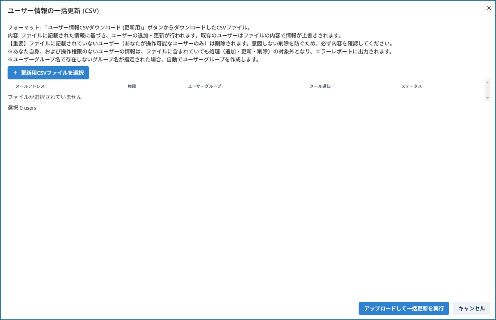
-
画面上部の「更新用CSVファイルを選択」ボタンをクリックし、編集したCSVファイルを選択してアップロードします。
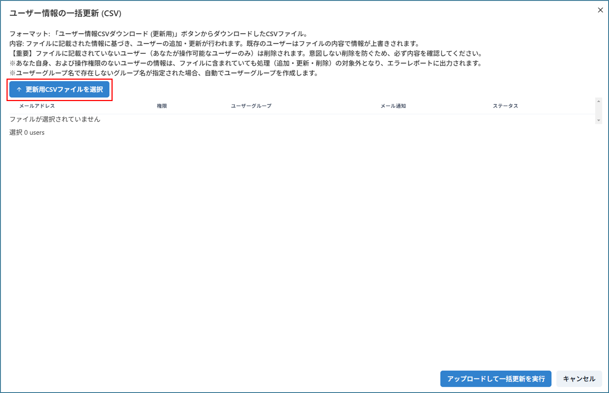
-
アップロード後、システムがファイルの内容を検証し、追加・更新・削除処理を実行します。処理が完了すると、「ユーザーCSVインポート」のメッセージが表示されます。
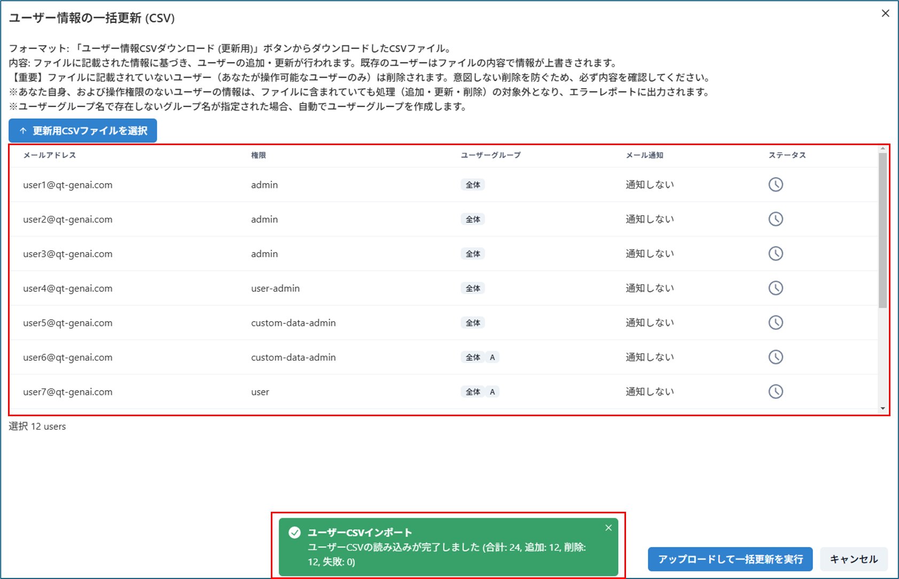
エラーレポートについて
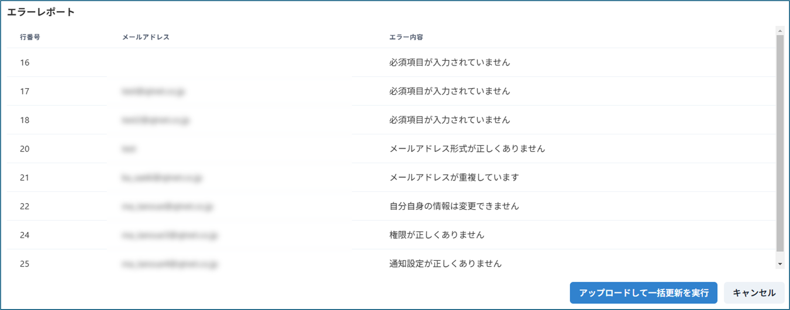
- 処理中にエラーが発生した場合や、処理対象外のユーザーが含まれていた場合（例：自分自身や上位権限者など操作権限のないユーザー）、画面下部にエラーレポートが表示されます。
- エラーレポートには、CSVファイルの行番号、該当メールアドレス、エラー内容（例：「自分自身の情報は変更できません」、「メールアドレスの形式が正しくありません」、「必須項目が入力されていません」、「操作権限がありません」など）が記載されます。
- 主なエラー内容：
- 必須項目（メールアドレス、アカウント権限）の欠落
- メールアドレスの形式不正
- ファイル内でのメールアドレスの重複
- 自分自身や上位権限者の情報が含まれている場合
- 操作権限のないユーザーの情報が含まれている場合
- 内容を確認し、必要に応じてファイルを修正して再アップロードしてください。
処理中断時の対応について
- ブラウザを閉じたり、ネットワーク接続が切断されたりして処理が中断された場合は、部分的に処理が完了している可能性があります。再度CSVファイルをアップロードして作業をやり直してください。
-
ファイルがアップロードされたら、画面右下の「送信」ボタンをクリックします。
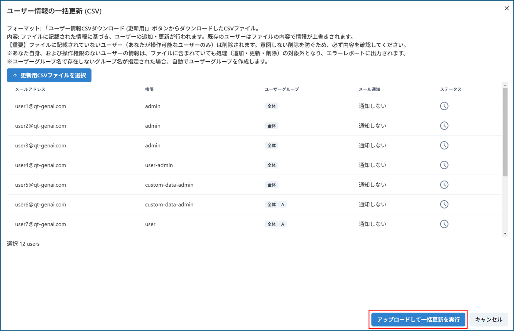
ユーザーパスワードの再設定
管理者とパスワードを変更するユーザーの両方で手順が必要になります。
管理者の手順
-
ユーザー管理画面から、パスワードの再設定を行いたいユーザ欄の右端にある「…」をクリックして、PW再設定ボタンをクリックしてください。
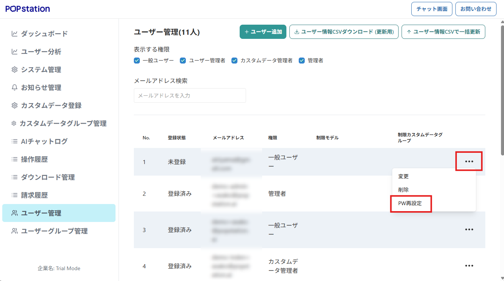
-
パスワードリセットメールの送信画面が表示されますので、送信ボタンをクリックしてください。
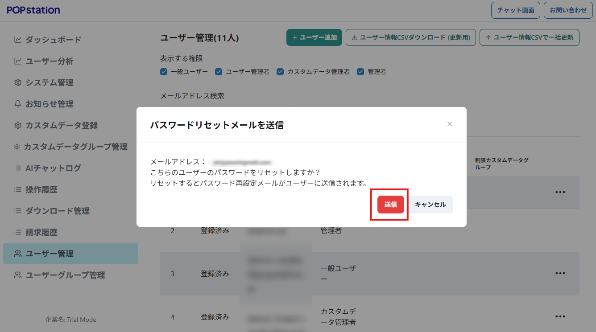
パスワードを変更するユーザーの手順
-
メールアドレスにパスワードリセットメールが届きます。
- 件名：パスワード再設定のご案内
- 送信メールアドレス：info@popstation.com
-
メール内に記載の CONFIRM（確認）ボタンをクリックしてください。
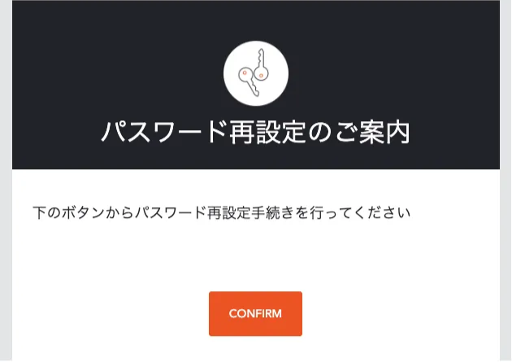
-
パスワードリセット画面に遷移しますので、新しいパスワードを設定してください。

パスワードの要件
以下の要件を満たすパスワードを設定してください。
- 最小桁数: 8文字
- 最大桁数: なし
- 使用可能文字: 英字小文字(a-z), 英字大文字(A-Z), 数字(0-9), 特殊文字(例 !@#$%^&*)
- 上記使用可能文字のうち、少なくとも3種類を使用すること
- 変更前パスワードと変更後パスワードは同一でも可
-
パスワードを設定後、「パスワードのリセット」をクリックしてください。
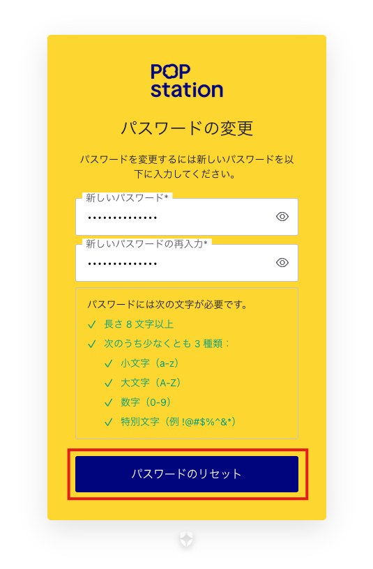
-
パスワード変更完了画面に遷移すると、パスワード変更は完了です。 その後、ログインするには「qt-genai.com に戻る」をクリックしてください。

-
ログイン画面に遷移するので、設定したパスワードでログインをしてください。
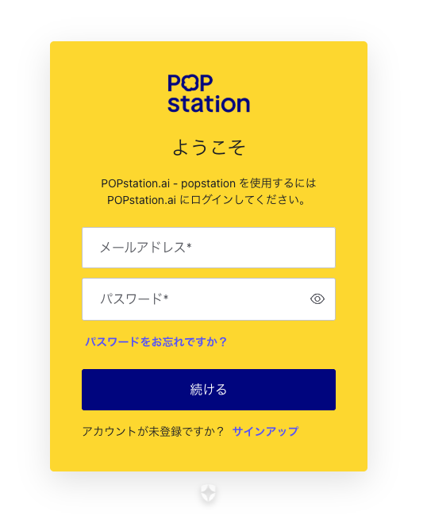
ユーザーのメールアドレス変更
管理者がユーザーのメールアドレスを変更する手順です。
-
ユーザー管理画面から、対象ユーザー欄の右端にある「…」をクリックして、「メールアドレス変更」をクリックしてください。
-
メールアドレス変更画面が表示されます。「新しいメールアドレス」を入力し、「確認メールを送信」をクリックしてください。
-
入力した新しいメールアドレス宛に確認メールが送信されます。メール内のリンクをクリックすることで、メールアドレスの変更が完了します。